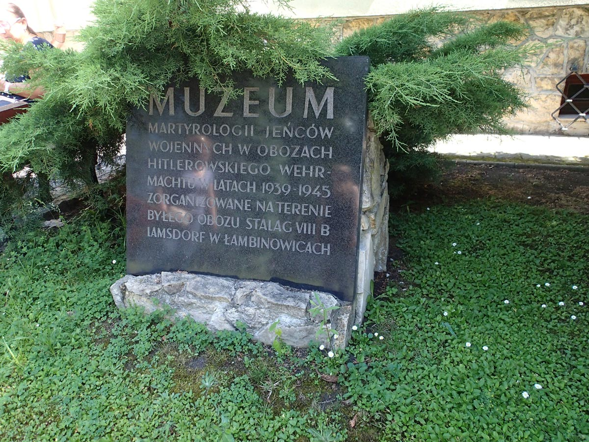

Продолжение краткой биографии
моего отца Корниенко Ивана Андреевича.
{kind=link}
Корниенко С.И.
Мой отец был призван Батайским гор. военкоматом на службу в Красную армию 28 марта 1942 года. Вместе с другими призывниками из Ростовской области его направили в город Моздок для обучения военному делу.
Ровно через месяц, проезжая через Батайск в сторону фронта, он отпросился у начальника эшелона сбегать домой, повидаться с семьёй, так как их эшелон имел здесь плановую остановку. В этот день, 28 апреля 1942 года, мы виделись с ним последний раз.
Проводив отца на войну, мы с мамой и ещё с четырьмя малолетними детьми: Николаем 11 лет, Валей 6 лет, Юрой 3,5 года и Ниной 7 месяцев (мне уже исполнилось 13 лет, и я был самым старшим), продолжали жить, ждать вестей от отца.
Зарабатывал на жизнь я один, работая в сапожной мастерской, где получал не только зарплату, но и хлебные карточки на себя и на иждивенцев.
С мая по июль 1942 года от отца мы получили два или три письма из Ворошиловоградской (ныне Луганской) области, где он участвовал в боевых действиях против немцев.
В июле 1942 года немецкие войска захватили Ростов и Батайск, и установили здесь оккупационный режим.
Во время оккупации я нигде не работал, жили тем, что я ночами ремонтировал обувь соседям, которые за труд платили продуктами. Днём мама меня никуда не выпускала, чтобы не попал на глаза какому-либо полицаю и не угнали в Германию на работу, как это было со многими подростками.
После освобождения Красной армией Батайска от немцев 6-7 февраля 1943 года, возвращения из эвакуации руководства города и восстановления работы местных предприятий, я снова вернулся на свое рабочее место в сапожной мастерской. Там я работал до марта 1947 года.
В Батайске наша семья никогда не имела своего собственного жилища, хотя в семье было много детей. Поэтому наиболее значимым событием тех лет является строительство нами с мамой своего жилья. До этого мы жили на съёмных квартирах. В 1944 году мама нашла свободный участок земли по адресу Октябрьская 62, где в войну бомбой был разрушен дом, а его бывшие жители бросили свой участок и уехали насовсем. Мама подала заявление, и городские власти разрешили ей построить дом на этом участке. В 1944 году мы построили небольшой домик из самана (в Батайске его называли - цегла) с земляным полом, без фундамента, и с камышовой крышей, размером 6х3 м + 2 м коридор (тамбур). У домика, как временного жилья, было одно окно на улицу и два окна во двор. Печь, стоявшая посередине дома, делила его на две комнаты. Но это был СВОЙ собственный ДОМ, в котором жила СВОЯ семья.
Между домом и забором было оставлено место для будущего строительства большого дома.
В марте 1947 года горком комсомола направил меня с Комсомольской путевкой на работу в паровозное депо, где крайне не хватало рабочих, в том числе кочегаров паровозов.
За всё время после освобождения от немецкой оккупации и до окончания Великой Отечественной войны в мае 1945 года, а также и позже, мы не получили от отца никакой весточки, хотя всё время ее ждали.
После окончания войны и отправления отслуживших фронтовиков по домам в 1945-1946 годах, мама почти ежедневно с малыми детьми ходила на ИЗО встречать воинские эшелоны, расспрашивала демобилизованных солдат, не встречали ли они где-нибудь нашего отца. Она неоднократно ходила в военкомат узнавать про судьбу своего мужа и нашего отца, но не получала никакого ответа.
И только в ноябре 1946 года нам прислали из гор. военкомата "Извещение" о том, что красноармеец Корниенко Иван Андреевич, находясь на фронте, пропал без вести в марте 1944 года. Это "Извещение" также являлось документом для ходатайства о пенсии на несовершеннолетних детей.

Несмотря на это "Извещение" мы всё равно ждали возвращения отца.
После восстановления работы школы № 9 (в войну в ней был военный госпиталь) дети пошли учиться - сначала Николай, потом Валя, потом Юра. Самая младшая сестренка Нина умерла в возрасте 9 месяцев 13 июля 1942 года.
Чтобы прокормить семью, обуть и одеть детей мама во время оккупации Батайска немцами и позже, когда немцев прогнали с Украины, вместе с другими женщинами, ездила на попутных машинах и грузовых поездах по дальним хуторам, деревням, менять носильные вещи, которые она шила на своей швейной машинке, на продукты питания, пока я сам не стал зарабатывать деньги на работе. После моего призыва в Советскую армию, мой брат Николай, закончив обучение в Железнодорожном ремесленном училище, стал работать помощником машиниста паровоза в паровозном депо Батайск с 1948 по 1950 год, зарабатывать деньги на содержание семьи.
Николай был призван на военную службу поздней осенью 1950 года и направлен служить в Северном военно-морском флоте. Эшелон, в котором он ехал к месту службы в Мурманске, проезжал через город Ярославль, и имел там плановую остановку. Николай прислал с дороги телеграмму об этом мне в военно-политическое училище, где я в это время был курсантом. Нам удалось встретиться и поговорить около 2 часов.
Наша мама, Ефросинья Никифоровна, оставшись без мужа с началом войны в возрасте 33 лет с пятью несовершеннолетними детьми, боролась как могла за жизнь и здоровье семьи. Подросшие старшие сыновья стали ей помогать своим трудом. Но, проводив сыновей на службу, сначала меня 1948 году, а потом Николая в 1950 году, она снова осталась единственной кормилицей. Но она не опустила руки. На своём приусадебном участке, она с помощью своих младших детей, дочери Валентины и сына Юрия, выращивала редиску, лук и другие овощи, обрабатывала их, продавала на рынках в Батайске и Ростове. Спасибо добрым соседям, которые разрешили ей пользоваться колодцем с журавлем для полива грядок.
После призыва на службу старших сыновей, мама устроилась на работу на Батайский ремонтно-механический завод во вневедомственную охрану, на должность сторожа-вахтёра. Там мама проработала до 1964 года, до выхода на пенсию.
Таким образом она зарабатывала средства на продолжение учебы Валентины и Юры до их совершеннолетия.
С марта 1947 года по февраль 1948 года я работал кочегаром паровоза. С февраля 1948 года по сентябрь 1948 года до призыва в Советскую армию я работал помощником машиниста паровоза.
Меня призвали на службу в сентябре 1948 года в железнодорожные войска. Службу солдатом железнодорожных войск я начал с участия в восстановлении железнодорожных путей в Донбассе, прокладки новых и вторых путей на однопутных перегонах в районах Купянска, Славянская, Дебальцево, Попасная и других станций. В ноябре 1948 года нас перебросили в город Лиски, в старые казармы, одели в новую солдатскую форму, научили ходить строевым шагом и так далее. В декабре 1948 года эшелонами нас перевезли в Пермскую область, где мы сразу же вступили в строительство нового железнодорожного деревянного временного моста через реку Чусовая. Планировалось строительство Камской ГЭС и Камского автозавода и требовалось построить новую железную дорогу от города Кизел до города Пермь. Старую железную дорогу длиной более 250 км затопит вода после строительства плотины Камской ГЭС.
Здесь 23 февраля 1949 года вместе со своей ротой солдат я принял воинскую присягу.
Затем наш мостостроительный батальон перебросили на правый берег реки Чусовая и мы строили бетонные трубы под насыпями, валили лес, строили временные лежневые дороги из толстых сосновых и еловых бревен для грузовых машин. Скреперами насыпали насыпи из местного грунта и другое.
Отсюда в 1950 году меня, как комсорга роты, направили на учебу в Ярославское военно-политическое училище для обучения на должность заместителя командира роты по политической части. В училище я проучился 1 год, получив хорошую политическую, культурно-эстетическую, экономическую, философскую и военно-тактическую подзарядку.
В 1951 наш ВПУ, вместе с ВПУ из Львова и Ленинграда были расформированы. Курсантов, бывших железнодорожников, 52 человека, перевели на должности младшего командного состава во вновь созданное в городе Ярославль военное железнодорожное училище.
Закончив военное железнодорожное училище на отлично, по первому разряду, и получив звание лейтенант, я был направлен командиром взвода отдельной роты эксплуатации в железнодорожную бригаду Ленинградского округа, город Суоярви. Здесь мы строили железную дорогу через леса и озёра параллельно старой железной дороге от Ленинграда до Мурманска и параллельно границе с Финляндией через город Петрозаводск. В январе 1954 года меня со взводом солдат направили на остров Саарема в город Кингиссепп Эстонской ССР, для расконсервации паровозного депо, электростанции, казармы для жилья солдат, подготовки места для передислокации всей роты на остров. Здесь мы расконсервировали 6 паровозов, залили их водой вёдрами, зажгли топки, оживили работу электростанции, 150 грузовых вагонов. Стали возить грунт для продолжения строительства начатой ранее железной дороги.
Еще будучи курсантом военного железнодорожного училища я женился на студентке Ярославского педагогического института Потехиной Галине Михайловне 28 января 1953 года.

1953г, Я, моя мама Ефросинья Никифоровна, моя жена Галина
Михайловна
{kind=link}
Окончив Пединститут по профессии Химик-биолог Галина приехала в город Кингисепп и стала работать преподавателем химии и биологии в средней русскоязычной школе. 10 апреля 1955 года у нас родился сын Евгений. А осенью 1956 года нашу роту эксплуатации направили на строительство и эксплуатацию подъездных железнодорожных путей к морским портам Калининграда, с местом дислокации роты в городе Черняховск (бывший Инстербург).
Здесь у нас в семье 28 ноября 1957 года родился второй сын Владимир. Отсюда я демобилизовался в конце февраля 1959 года, привёз жену и двух сыновей в Батайск.
1959-02 Возвращение семьи в Батайск после службы в Черняховске
{kind=link}
Ещё в период до моей демобилизации, мама писала мне, что они с моим братом Юрием заготавливают бревна, другие стройматериалы для строительства большого дома. Уже построили часть фундамента под будущий дом. Поэтому, демобилизовавшись, с семьей приехал в Батайск 17 марта 1959 года, и сразу же включился в строительство дома для мамы, Юры и его будущей семьи, попросив у них разрешение на временное проживание моей семьи, пока я не получу от государства или не построю свой дом. Служа в железнодорожных войсках, научился хорошо владеть топором, рубанком. Так что для меня это было нетрудно. Мы с Юрой и с помощью Владимира Галкина, мужа нашей сестры Валентины, удлинили построенный фундамент с 8 до 15 метров. Позади этого фундамента мы построили новый домик из самана размером 10х3 м. После того как он обсох, всей семьей перешли туда жить. И начали строительство нового дома из бревен, на две половины - для мамы и брата Юры, и для временного проживания моей семьи.
Продолжая начавшееся строительство большого родительского дома, в мае 1959 года, я поступил на работу в паровозное депо Батайск (откуда в 1948 году я был призван в Советскую армию) на должность помощника машиниста паровоза. В депо меня помнили и хорошо приняли. Здесь было много моих товарищей, с которыми я работал раньше.
Работая помощником машиниста паровоза, я самостоятельно подготовился для сдачи экзаменов на должность машиниста паровоза и экстерном сдал экзамен в Управлении СКЖД на право управления паровозом. В июне 1960 года я был назначен машинистом паровоза, и зарплата моя значительно повысилась, что было крайне важно при самостоятельном строительстве жилья.
В 1959 - 1960 годах моя семья периодически встречалась с семьями моей сестры Валентины Ивановны и брата Николая Ивановича, который приезжал к нам из Воронежа и один и со всей своей семьей. Об этом периоде остались на память многие семейные фотографии.
1961г, Юра, Ефросинья Никифоровна, Николай с женой и дочкой,
Валентина с мужем, дочкой и родителями мужа, я и Галина
{kind=link}
Второй сын Ивана Андреевича, мой брат Николай, 1930 года рождения, был призван из паровозного депо Батайск, где он работал помощником машиниста паровоза, на военную службу в Северный Военно-Морской Флот осенью 1950 года. Службу проходил на военном корабле в городе Полярном Мурманской области до конца 1954 года. После демобилизации он возвратился домой в Батайск к своей матери, сестре Вале и брату Юре. Вновь на работу в паровозное депо его не приняли, так как произошло сокращение штатов, и помощники машиниста были не нужны. Поэтому он уехал в город Воронеж к старшей сестре моей мамы, тете Мусе, у которой не было своих детей. Николай прописался и жил в её квартире. В Воронеже он поступил слесарем высокого разряда на номерной завод.
Вскоре Николай познакомился с девушкой Валентиной Ивановной Гаранжа, родители которой были родом из города Бутурлиновка, где родился и женился наш отец Иван Андреевич.
В мае 1956 года Николай и Валентина поженились.
В браке у них родились дети: дочь Елена - в сентябре 1957 года и сын Александр - в августе 1962 года.
Дети Николая Ивановича, - внуки Ивана Андреевича, выросли, получили среднее, а затем и высшее образование.
Лена вышла замуж за учившегося вместе с ней в Воронежском университете Москаленко Юрия Александровича. Сейчас у них уже взрослые дети: сын Андрей, который родился в 1983 году, и дочь Ира, родившаяся в 1987 году. Андрей и Ирина также получили высшее образование. Внук Николая Ивановича Андрей завёл свою семью, у него свои дети - два сына и дочь. Внучка Николая Ивановича Ирина пока не замужем. Сын Николая Ивановича Александр женился. В 1987 году в его семье родилась дочь Мария. Она получила высшее образование в Воронеже. Пока не замужем.
Сам Николай Иванович безвременно ушел из жизни в 1988 году в возрасте 58 лет.
Вдова Николая Ивановича - Корниенко Валентина Ивановна давно на пенсии, живёт вместе с семьей своей дочери Елены в своём собственном жилье.
Моя сестра Валентина Ивановна, 1936 года рождения, ещё проживая с мамой, после школы поступила в Ростовский техникум связи, окончила его. Была назначена на работу в почтовое отделение связи в Батайске.
В мае 1956 года она познакомилась и вышла замуж за батайчанина Галкина Владимира Андреевича и долгие годы они проживали в доме родителей мужа: Андрея Николаевича и Ксении Гордеевны. У них с мужем Владимиром родились 2 дочери: Людмила - в марте 1957 года и Светлана - в марте 1962 года.
Муж Валентины Ивановны Владимир был хорошим столяром и плотником; они вместе приобрели кооперативную квартиру. Владимир рано ушёл из жизни. Валентина Ивановна перешла на работу в локомотивное депо Батайск, где работала лаборантом в химической лаборатории до выхода на пенсию.
Её старшая дочь Людмила получила среднее образование, окончила бухгалтерские курсы, и работает бухгалтером в Ростовской ЦГБ. Вышла замуж за Семёнова Александра. В октябре 1987 года у них родился сын Александр. В настоящее время он уже отслужил в Российской армии, женился, работает.
Вторая дочь Валентины Ивановны - Светлана закончила Ростовский железнодорожный техникум, работала по направлению в Тюменской области. Вернулась в Батайск. Работает в Ростовской ЦГБ бухгалтером. Светлана вышла замуж за батайчанина, токаря локомотивного депо Блошко Александра. В браке у них родились 2 дочери: Екатерина - в 1983 году и Татьяна- в 1985 году. Обе дочери замужем.
В феврале 2014 года у правнучки Ивана Андреевича Татьяны родилась дочь Даша. Ходит в детский сад.
Продолжая работать машинистом паровоза, я вместе с Юрой строил родительский дом, и к декабрю 1959 года мы закончили переднюю, Юрину половину дома. Поставили крышу на весь дом, постелили пол, поставили печь, оштукатурили, провели электричество и перешли жить туда из саманного временного домика. Временный домик стал сараем.
В течение 1960 года, продолжая работать, мы продолжали и строительство второй, маминой половины дома, которую закончили к концу 1960 года.
Во вторую половину дома мы с женой Галиной Михайловной и двумя своими сыновьями перешли жить в июне 1960 года и жили там до февраля 1974 года, когда локомотивное депо выделило мне трехкомнатную квартиру в новом пятиэтажном доме, построенном на той же улице Октябрьской, где был родительский дом.
В 1959-1960-1961 годах на СКЖД, в том числе и в паровозном депо Батайск, шла массовая переподготовка паровозных локомотивных бригад и ремонтных цехов к скорому переходу на новые виды тяги, к замене паровозов тепловозами и электровозами. Поэтому в декабре 1961 года меня, вместе с группой машинистов паровозов, направили в Ростовскую Дортехшколу на курсы переквалификации машинистов тепловозов на 9 месяцев.
Окончив обучение в Дортехшколе, сдав экзамен на право управления тепловозом, я вновь возвратился в депо и был назначен работать машинистом тепловоза в сентябре 1962 года.
Еще осенью 1960 года в преддверии электрификации СКЖД, я поступил на 3 курс Ростовского железнодорожного техникума для заочного обучения по специальности электротяговое хозяйство. Поэтому, работая машинистом тепловоза, и проходя поездную практику по программе техникума действующим помощником машиниста электровоза, я наездил на электровозах необходимые 6000 км, подготовился и сдал экстерном экзамен на право управления электровозом в Комиссии Управления СКЖД в июне 1963 года. В июле 1963 года прошел обкатку в должности дублера машиниста электровоза на закрепленных участках (плечах) обслуживания Батайск-Лихая и Батайск-Иловайск. Получил заключение машинистов инструкторов о допуске к самостоятельной работе машинистом электровоза. Приказом начальника депо был назначен машинистом электровоза.
В это же время, августе 1963 года, в локомотивном депо проходила отчетно-выборная партийная конференция, на которой меня избрали секретарем парткома депо.
Младший сын Ивана Андреевича, мой младший брат Юрий Иванович, 1938 года рождения, до моей демобилизации в 1959 году работал слесарем-арматурщиком на заводе железобетонных конструкций (ЖБК) в городе Батайск и одновременно учился в вечерней школе, заканчивал десятый класс. После моего поступления в паровозное депо, он также перешёл работать в паровозное депо, сначала поездным кочегаром, потом помощником машиниста паровоза. Как и все паровозные бригады, прошёл переквалификацию для работы на тепловозе, потом на электровозе. Закончил Дортехшколу и был назначен машинистом электровоза. В этой должности он проработал до выхода на пенсию в 1993 году.
Летом 1963 года Юрий Иванович полюбил девушку, работавшую лаборантом в батайской Железнодорожной санэпидстанции Фёдорову Галину Ивановну, и вскоре женился на ней. Мы с мамой и моей женой Галиной Михайловной помогали ему организовать и провести свадебный обряд, уже в своём доме. Было приглашено много гостей как со стороны жениха, так и со стороны невесты.
Родственники жениха и невесты запечатлены на фотографии новой семьи.
1963г Родные и близие на свадьбе Корниенко Юрия Ивановича
{kind=link}
Работая машинистом электровоза, Юрий Иванович заочно окончил Ростовский железнодорожный техникум. Это очень помогло ему, уже после выхода на пенсию, продолжать работать в батайском железнодорожное училище (ГПТУ) мастером производственного обучения выпускников школ на профессию помощников машинистов электровозов, а потом и преподавателем.
В семье Юрия Ивановича 19 июня 1964 года родился сын Олег. Олег успешно закончил среднюю школу и поступил в Ростовское Высшее Артиллерийское Училище. Закончив РАУ, он получил высшее военное образование, воинское звание лейтенант, и был направлен служить в ракетные войска. Ещё в Ростове встретил девушку, свою будущую жену Марину Владимировну. Женился.
У самого младшего внука Ивана Андреевича - Олега и его жены Марины в семье родилась дочь Анна в феврале 1987 года как раз ко дню Советской Армии 21 февраля.
Отслужив необходимый срок, Олег, в звании майор, демобилизовался в возрасте около 40 лет и с семьёй возвратился в родительский дом.
2004г Галина Ивановна и Юрий Иванович, Лена Москаленко с
мужем и дочкой, Олег
{kind=link}
Правнучка Ивана Андреевича Аня закончила в Батайске в среднюю школу, в Ростове поступила и окончила ВУЗ, вышла замуж за Тимошенко Алексея и родила уже двоих праправнуков: Фёдора Алексеевича в сентябре 2012 года и Ивана Алексеевича 28 августа 2014 года, а потом и праправнучку Софью 11 декабря 2016 года.
Вся семья внука Олега, в том числе его жена Марина, их дочь Анна, зять Алексей - занимаются предпринимательством, зарабатывает деньги и строят свой двухэтажный дом в районе бывшего совхоза Красный Сад. Дом скоро будет готов и Аня со своей семьёй переберётся туда.
Жена Юрия Ивановича и мама Олега, Галина Ивановна, безвременно ушла из жизни на 69-м году жизни в январе 2006 года.
Сыновья Евгений и Владимир в школе учились хорошо. За успехи в учебе, участие в общественной жизни школы, олимпиадах и спортивных соревнованиях неоднократно награждались почетными грамотами и дипломами.
С раннего возраста, в школе они стали увлекаться фотографией, музыкой, спортом, радио, электротехникой и астрономией. Специально для них и для всей семьи мы выписывали детские, юношеские, научно-познавательные журналы, такие как Квант, Юность, Техника Молодёжи, Вокруг Света, Наука и Жизнь, Семья и Школа, Работница и другие, местные и центральные газеты.
{kind=link}
{kind=link}
Женя последние 3 года обучения в школе изучал физику по английскому учебнику.
Вместе с детьми мы ездили в Ростовский цирк, зоопарк, ТЮЗ, на речные прогулки катерами по реке Дон. В летние каникулы почти ежегодно ездили на берега Черного моря в Анапу, Новороссийск, Кудепсту, Небуг, Сочи. Посетили города Сухуми и Тбилиси. Оба сына рано научились хорошо плавать. Дома во всём помогали своей маме по хозяйству, ведь она работала преподавателем в школе. Носили домой воду из колонки на улице, кололи дрова, били, размельчали уголь для печки, топили печку и так далее.
В старших классах Женя играл на кларнете в школьном духовом оркестре, занимался гимнастикой, легкой атлетикой, стрельбой, кино- и радио- обеспечением школьных вечеров, летних лагерей отдыха школьников, о чём говорят его сохранившиеся похвальные грамоты.
Вова занимался легкой атлетикой, баскетболом, шахматами, участвовал в конкурсах технического творчества школьников, где неоднократно получал похвальные грамоты и дипломы.
Всестороннее умственное и физическое развитие позволило им свое время успешно сдать выпускные экзамены в школе, а затем поступить в ВУЗы.
В локомотивном депо в 1963 году и позднее, работало более 2100 человек, том числе более 1300 человек непосредственно в цехе эксплуатации, занятых на поездной и маневровой работе, на электровозах и тепловозах. Для укрепления депо специалистами, кроме опытных машинистов, МПС направило к нам более 50 инженеров из локомотивных депо Сибири, Урала, Казахстана, Поволжья, железнодорожных институтов Москвы, Ленинграда, Днепропетровска, Новосибирска, Ростова и других городов. В работе по перевозке грузов было задействовано до 100 электровозов и до 60 тепловозов. Одним локомотивным депо Батайск выполнялась огромная перевозочная работа, соизмеримая с объемом перевозок таких Европейских стран как Польша, Болгария, половинная доля перевозок Франции.
Вместе с руководством депо, партийным комитетом выполнялась большая организаторская, политическая, воспитательная работа, о содержании которой рассказано в других повествованиях.
Здесь речь идет только о временных и служебных рамках в жизни семьи автора.
В 1964 году я с отличием закончил железнодорожный техникум и, работая секретарем парткома депо, в 1967 году поступил в РИИЖТ на вечерний факультет электрификации железнодорожного транспорта, который окончил в июне 1973 года, получив квалификацию "Инженер Путей Сообщения, электромеханик". Мне выдали красный диплом с отличием.
Еще до окончания РИИЖТ, приказом начальника Ростовского отделения СКЖД и приказом начальника депо я был назначен с 1 сентября 1972 года заместителем начальника локомотивного депо по эксплуатации, работав до этого секретарем парткома депо 9 лет.
Проработав в должности заместителя начальника депо по эксплуатации почти 6 лет, приказом начальника СКЖД в марте 1978 года я был переведён на работу в Управление СКЖД на должность старшего инженера по автотормозам службы локомотивного хозяйства.
В феврале 1974 года в депо дали для меня и семьи трехкомнатную квартиру в Батайске в пятиэтажном доме, построенном в 1973 году.
В ноябре 1979 года я был переведён на должность старшего ревизора службы.
Моя работа в должностях секретаря парткома, заместителя начальника депо, старшего инженера и старшего ревизора службы локомотивного хозяйства СКЖД была направлена на обеспечение безопасности движения поездов, повышение квалификации локомотивных бригад, обучение их в Дортехшколах и приему от них экзаменов после обучения, внедрение научной организации труда во всех депо СКЖД.
В связи с предстоящим уходом на пенсию в 55 лет и недостающим стажем 11 месяцев для ухода на пенсию по горячей сетке (в должности машиниста) по моей просьбе, я был переведён в локомотивное депо Батайск на должность машиниста тепловоза 31 мая 1983 года.
В этой должности я проработал, уже в пенсионном возрасте 11 с половиной лет, до ухода на пенсию 30 декабря 1994 года.
Наш старший сын Евгений, старший внук Ивана Андреевича, окончив в Батайске среднюю школу № 9 в 1972 году, поступил учиться в МФТИ на факультет "Аэрофизики и космических исследований".
Успешно закончив обучение, он получил квалификацию инженер-физик по специальности "Летательные аппараты", в 1978 году был направлен на работу в научный институт ЦНИИМАШ в город Калининград, ныне город Королёв, в Московской области.
Еще будучи студентом МФТИ в городе Долгопрудном, по программе военной кафедры института, он прошел воинскую подготовку на специальных сборах, принял воинскую присягу. По окончании сборов, приказом министра обороны, ему было присвоено воинское звание лейтенант.
{kind=link}
Работая в ЦНИИМАШ, он женился на девушке, выпускнице MФТИ, с которой долгое время общался и дружил, Коноваловой Ирине Андреевне, в ноябре 1982 года.
В декабре 1982 года молодая чета пригласила нас с Галиной Михайловной на семейное торжество по случаю брака, в город Смоленск, где жили родители невесты Коноваловы Андрей Николаевич и Елизавета Захаровна. Это событие было запечатлено на семейной фотографии.
1982г Свадьба Жени в Смоленске
{kind=link}
Уже будучи замужем, жена Жени Ирина Андреевна, окончила аспирантуру и получила звание кандидат физико-математических наук.

2010 Женя и Ира на велосипедной прогулке
1 августа 1983 года у них родился сын Андрей, а 20 января 1987 года дочь Александра.
Правнук Ивана Андреевича, Корниенко Андрей Евгеньевич, 1983 года рождения, в свою очередь, окончил среднюю школу, поступил в МФТИ. Окончив ВУЗ, он получил направление на работу в город Москву.
Продолжая работать, он получил второе высшее экономическое образование. Женился на Мамонтовой Ольге Васильевне.
{kind=link}
Для дальнейшего повышения квалификации, в 2015 году он поступил на учебу в Кембриджский Университет, куда переехал вместе с женой, на временное проживание во время учебы.
11 апреля 2016 года у них в семье родилась дочь Кира. По окончанию учёбы в Кембридже, Андрей был приглашен в Ирландию, для работы в Интернет-Концерне Google в городе Дублин, куда он переехал со своей семьей и живет там на частной квартире.
{kind=link}
{kind=link}
2017.01.12 Кира в гостях у бабушек
{kind=link}
Правнучка Ивана Андреевича, Корниенко Александра Евгеньевна, 1987 года рождения, закончив среднюю школу, поступила в МГУ, закончив который в феврале 2009 года, получила направление на работу в город Москва в Институт молекулярной биологии РАН.
2006.02.11 День рождения бабушки в Москве. Ира, Галина Михайловна,
Саша.
{kind=link}
Проработав до декабря 2010 года в Москве, для дальнейшего повышения квалификации, она поступила на учебу в аспирантуру в Центр Молекулярной Медицины Австрийской Академии Наук и закончила аспирантуру в июле 2016 года, получив звание Доктор Наук в области генетики (РНК Биологии).
В настоящее время занимается научной работой и живет в Вене. Не замужем.
{kind=link}
Внук Ивана Андреевича, мой сын, Владимир, 1957 года рождения, окончив в Батайске среднюю железнодорожную школу № 16, поступил учиться в 1975 году в Ростовский Машиностроительный институт на факультет Приборостроения.
Перед окончанием ВУЗа, еще будучи студентом Ростовского машиностроительного института, по программе военной кафедры, Володя прошел воинскую подготовку на специальных сборах вблизи Новочеркасска. Здесь студентов обучали вождению и обслуживанию танков. В конце сборов Володя принял воинскую присягу. На церемонию принятия присяги студентами приглашались и родители.
Поэтому мы с Галиной Михайловной специально приехали на своей машине и присутствовали при принятии присяги нашим сыном.
{kind=link}
По окончании воинских сборов и обучения в институте, Министерством Обороны СССР, Володе было присвоено воинское звание Лейтенант.
Закончив обучение в институте в 1980 году, он получил квалификацию инженера-электромеханика. После института Вова был направлен на работу в город Челябинск, на станкостроительный завод. Работая на заводе мастером, затем инженером-технологом ОГТ, он познакомился, влюбился, а затем женился, в октябре 1982 года, на девушке, работавшей с ним на одном и том же заводе, Хабибуллиной Римме Хайрулловне. В браке у них родились дочери: Юлиана 18 сентября 1983 года, Эвелина 17 июля 1985 года и Алла 15 июня 1989 года.
Наша старшая внучка, правнучка Ивана Андреевича, Юлиана, 1983 года рождения, в Челябинске закончила 8 классов средней школы и приехала к нам в Батайск. Здесь она закончила среднюю школу № 16, получила аттестат зрелости в 2001 году. Параллельно со школой она обучалась рисованию и закончила художественную 3 годичную школу. Получив среднее образование, она поступила в Ростовский Государственный Лицей Модной Одежды. Закончив лицей, Юля вышла замуж за юношу, который во время регистрации брака взял себе фамилию невесты, то есть нашу фамилию. 5 декабря 2002 года у них в семье родилась девочка, наша правнучка и праправнучка Ивана Андреевича - Ирочка.
2003г Алла, Ирочка, Юля, Вова в Батайске
{kind=link}
{kind=link}
В настоящее время ей уже исполнилось 14 лет, и она закончила 7 класс. В 2004 году Юля с дочерью разошлась с мужем и уехала в Челябинск к своим родителям, живёт в их квартире.
Юля работает главным менеджером в торговой компании по производству и реализации детского питания в городе Челябинск и во всём Южном регионе Урала. Юля заочно обучается в институте. И через 1 год должна его окончить.
Другая дочь внука Ивана Андреевича Владимира Семёновича Эвелина, 1985 года рождения, работает менеджером в торговой сети города Челябинска. В свободное время пишет стихи, некоторые из них публикует в интернете. Не замужем. Лина училась в Торговом техникуме и хорошо закончила его.
1999г Эля и Юля у новогодней ёлки
{kind=link}
Третья дочь Владимира - правнучка Ивана Андреевича, Алла, 1989 года рождения, закончила среднюю школу № 16 в Батайске.
2004г Римма, Алла, Семен и Галя на даче
{kind=link}
2006г Рима, Алла, Вова в Челябинске. Подготовка к выпускному
вечеру.
{kind=link}
Алла заочно окончила Институт физкультуры в Ростове. Получила высшее образование по специальности реабилитолог. В 2013 году вышла замуж за программиста-компьютерщика Сергея Волкова в городе Ростов-на-Дону. Вскоре её муж нашел себе работу в Москве, и они переехали туда. Живут на съемной квартире.
Наши невестки Ирина Андреевна (жена старшего сына Евгения) и Римма Хайрулловна (жена младшего сына Владимира) хорошо воспитали своих детей - правнуков Ивана Андреевича Корниенко. Благодаря материнской любви и заботливому воспитанию наши внуки научены правилам хорошего поведения, уважения к старшим и своим родителям, своим дедушкам и бабушкам, воспитаны в духе высокой ответственности за свои дела и поступки, за своё обучение в школе и Вузе, выполнение своих обязанностей в семье и обществе. Мне и Галине Михайловне всегда приятно общение с нашими внуками. Иногда они приезжают к нам в гости, часто сообщают нам о своих делах и успехах, присылают фотографии.
Про свою семью и частную жизнь.
Как я уже писал, после окончания службы в Советской Армии и поступления на работу в паровозное депо, меня там помнили и приняли хорошо. Уже в начале июля 1959 года в депо, на должность химика-лаборанта приняли на работу мою жену Галину Михайловну, а дети Женя и Володя были определены в детский сад и детские ясли.
Вскоре, кроме прежних товарищей и друзей, появились новые хорошие товарищи и друзья. С некоторыми из них мы подружились семьями. Вместе встречали праздники на природе, а потом и в домашней обстановке. С детьми ходили в гости, приглашали их в себе, вместе посещали зоопарк, цирк в Ростове, ездили в Ростовский театр Музкомедии, драм театр имени Максима Горького и др.
В основном это были машинисты, лаборанты, инженеры, медработники, учителя из числа местных, а также из приезжих специалистов, в том числе из Сибири со своими женами и детьми. С некоторыми мы дружили всю жизнь, не только до пенсии, но и до смерти.
С некоторыми друзьями, например, с Волчковым Николаем, я был знаком и дружил с дошкольного возраста, в том числе и до службы в армии и после того как у нас появились свои семьи, свои дети и внуки. Николай работал в депо машинистом паровоза, электровоза до пенсии. Его жена, Мария Никитична, работала медсестрой в здравпункте локомотивного депо.
С семьёй Грудинова Якова Александровича наша семья познакомилась после их приезда в Батайск в 1962г и поступления на работу в локомотивное депо. Яков работал машинистом электровоза. Его жена Мария Макаровна была лаборантом в хим. лаборатории, где старшим лаборантом была моя жена Галина Михайловна.
С семьёй Якуничевых мы познакомились и дружили всю оставшуюся жизнь после их переезда из Сибири в Батайск и поступления в 1962г на работу в локомотивное депо.
Георгий Викторович начал работу в депо мастером цеха, а потом был переведен на работу в Управление СКЖД. Его жена Нина Алексеевна работала заведующей хим. лабораторией депо.
Наши общие друзья, инженеры Десятовы, приехали в Батайск из Красноярска. Григорий Михайлович работал старшим мастером ПТО электровозов. Затем начальником депо Ростов и начальником локомотивного отдела Ростовского отделения СКЖД. Его жена Лидия Яковлевна работала преподавателем железнодорожного техникума.

2004.02.15 в гостях у Грудиновых. Поминки Грудиновой Марии,
2ая годовщина.
Мы часто, вместе с детьми, встречались поочередно и в общественных местах и в семейной обстановке. И так всю оставшуюся жизнь.
К большому сожалению, все мои друзья, в разное время, ушли из жизни. Но светлая память о них сохранилась.
Вскоре после моего выхода на пенсию нас с женой пригласили в клуб пожилых людей, ветеранов войны и труда "Общение", созданный при библиотеке М.Ю.Лермонтова, руководимый Тамарой Степановной Борисенко.
В клубе ежемесячно, кроме летних каникул, собирались до двух десятков пожилых мужчин и женщин. Для них организовывалось проведение бесед и лекций, встречи с депутатами городского и областного Советов (Дум), руководителями города и предприятий.
На встречу с ветеранами приглашались учащиеся школ, со своими учителями, которые показывали номера художественной самодеятельности, танцы, песни, стихи.
Приглашались воспитатели детских садиков с дошколятами, и мы смотрели их незамысловатые искренние выступления.
Сами ветераны пели хоровые песни, танцевали под баян или музыку грам. записи.
На общих сборах чествовали ветеранов, именинников, награждали их подарками, устраивали чаепития, на заранее собранные средства.
2001г Встреча с ветеранами войны в День Победы в библиотеке
им. Лермотова
{kind=link}
2010.05.07 65 лет Победы. Встреча в библиотеке им Лермонтова.
{kind=link}
2015г, весна. Встреча в библиотеке. Руководители клуба 'Общение'
Зоя Ивановна, Зинаида Николаевна, Галина Михайловна.
{kind=link}
К таким встречам и общению друг с другом готовились как к празднику.
После Тамары Степановны клубом руководила Зоя Ивановна, Зинаида Николаевна, бывшие библиотечные работники.
Их бескорыстный благородный труд по созданию комфортных условий для пожилых, особенно для одиноких людей, заслуживает большой похвалы и уважения.
В 1964 году я вступил в Общество охотников и рыболовов. Купил очень хорошее охотничье ружьё, с которым ходил с товарищами на охоту более 30 лет, правда, только на открытие сезона на перепёлку, на водоплавающую дичь, на зайца. Всегда приходил с трофеями. Галина Михайловна научилась очень хорошо обрабатывать и готовить к столу дичь и рыбу, на которые мы приглашали не только близких родственников, но и близких друзей. К слову сказать, она прекрасно готовит пироги.
В 1967 году в депо выделили нашей семье садово-огородный участок земли размером в 4 сотки в садовом товариществе. Там мы сажали овощи, посадили и вырастили многие плодовые деревья и кустарники. С тех пор в семье всегда есть варенье, повидло, компоты, шиповник и другие плоды садоводства. Заниматься садом и огородом нам всегда помогали сыновья, а потом и внуки.
В 1972 году я купил мотоцикл "Иж Юпитер-3", на котором мы ездили на дачу без коляски, потом и с коляской. Женя, еще будучи школьником, сдал экзамен на право управления мотоциклом, ездил на мотоцикле. В 1974 году нашей семье выдали государственную трехкомнатную квартиру, и мы с семьей освободили мамину жилую площадь в построенном для неё родительском доме. Переехали в своё жильё.
В 1977 году мы купили автомобиль ВАЗ 21011. С появлением внуков, в 1983 году мы построили на дачном участке небольшой кирпичный домик с верандой, чтобы с внуками можно было укрыться под крышей в непогоду и при сильном летнем солнцепеке.
Галина Михайловна в 1964 году перешла на работу преподавателем химии и биологии в среднюю железнодорожную школу № 12, а в 1970 году в новую, построенную на нашей улице, железнодорожную школу № 16, куда перешел учиться и наш младший сын Володя, из школы № 9, где он раньше учился.
Из-за тяжёлой болезни своей мамы Потехиной Веры Алексеевны и необходимости постоянного ухода за ней Галине Михайловне пришлось оставить работу в школе. Она была переведена на работу в локомотивное депо на должность старшего лаборанта химической лаборатории с 1 ноября 1975 года, где она проработала до сентября 1984 года.
По просьбе администрации школы № 16, она вновь вернулась на работу в школу преподавать химию, биологию, и заниматься зелёными насаждениями на пришкольном участке.
Наши внуки, дети Жени и Володи, в дошкольном и школьном возрасте жили в Москве и в Челябинске. Летние каникулы они почти всегда проводили в Батайске. Помогали нам с бабушкой Галей ухаживать за садом и огородом, выращивать и собирать урожай, красить веранду и деревянный штакетник забора на даче.
На автомашине мы с внуками, а иногда и с их родителями, часто ездили купаться на Батайскую речку, Солёное озеро, на широкий оросительный канал. Здесь все наши внуки научились плавать. Андрей и Юля, как старшие внуки, начали свое обучение вождению автомобиля.
1988г Галина Михайловна, Ира, Римма и внуки Юля, Эля, Саша,
Андрей
{kind=link}
1995г, июль. Соленое озеро 'Котлован', г. Батайск
{kind=link}
Еще с раннего возраста внуков, мы с ними проводили разные семейные игры, разгадывание загадок, чтение книжек, чтение наизусть стихов Пушкина, Лермонтова, басен Крылова. Просматривали диафильмы при помощи диапроектора, слайды, смотрели детские передачи по телевизору, слушали музыкальные пластинки, кассеты, смотрели кинофильмы на видеомагнитофоне и так далее. В домашнем хозяйстве у бабушки был установлен порядок дежурства по квартире и даче в части уборки, приготовления пищи и так далее.
Чтобы иметь больше времени для таких забот, Галина Михайловна уволилась из школы в июле 1988 года в возрасте 57 лет.
За время работы в школах номер 12 и 16 и хим. лаборатории локомотивного депо, она, благодаря своему трудолюбию и очень ответственному отношению к любому порученному делу в воспитании школьников, в общественной жизни школ и депо заслужила глубокое уважение своих коллег по работе, руководителей школ, руководителей спортивных организаций не только предприятий, но и городских и областных властей.
За успехи в работе, в общественной жизни и спортивные достижения она награждена многочисленными почетными грамотами, приветственными адресами. Награждена медалью Ветеран труда, пользуется льготами как Ветеран труда. То же можно сказать и о моей трудовой деятельности и участии в общественной жизни.
Но негативным событием в нашей жизни явилось серьезное заболевание у меня - атеросклероз артерий нижних конечностей, стенокардия, гипертония и другое - что, уже после выхода на пенсию привело к ампутации правой ноги в 2009 году, а ещё раньше в 2007 году было сделано стентирование левой ноги выше колена. В связи с этим, а также с серьезным гипертоническим заболеваниям Галины Михайловны, наш сын Владимир, уволился со своей работы в Челябинске и переехал на жительство в Батайск в 2009 году, а в 2010 году перевёз сюда семью, и работает в Батайске инженером-электронщиком.
Подводя некоторый итог продолжению жизни потомками Ивана Андреевича, можно сказать, что после окончания Великой Отечественной войны и разгрома фашизма жизнь всех людей улучшилась.
Все семьи детей, внуков и правнуков имеют свое жилье, легковые автомобили, множество бытовой техники, телефоны, телевизоры, компьютеры и прочее. Появилось множество новых технологий в быту, промышленности, военном деле, на транспорте, в сельском хозяйстве.
Вечная память воинам - защитникам нашей Родины
Мы поминали Ивана Андреевича 28 марта, в день, когда он был призван в Красную Армию, и 28 апреля, в день, когда он последний раз был в Батайске. Примерно в 1970 году День Победы 9 мая стал нерабочим днём, и в Москве стали проходить парады на Красной площади. С этого времени мы стали поминать Ивана Андреевича и других погибших в Отечественную войну воинов 9 мая. И всё же судьба его оставалась неизвестной. Мы не знали где и как он погиб, или, может быть, он дошёл до Берлина, и у него была какая-то неизвестная нам судьба.
Благодаря появившемуся интернету, рассекречиванию архивов Министерства обороны времен Великой Отечественной войны, созданию и работе общественной организации Мемориал, старшему внуку Ивана Андреевича Евгению Семёновичу, уже самому ставшему дедушкой, удалось найти и проследить судьбу, трагическую гибель и место захоронения своего дедушки, красноармейца Корниенко Ивана Андреевича, о чём была написана "Краткая биография моего отца Ивана Андреевича" 13 июля 2015 года.
{kind=link}
На сайте Мемориал также обнаружилось донесение об отце Галины Михаиле Григорьевиче Потехине. Он был призван в Красную армию 20.12.1942 Ветлужским РВК Горьковской области. Сообщений с фронта семья не получала. Летом 1946 года было получено извещение, что красноармеец Михаил Григорьевич Потехин пропал без вести 04.02.1943. По словам односельчан, возможно, он погиб при бомбёжке эшелона по пути на фронт.
1946г, Выписка из донесения о судьбе Михаила Григорьевича
Потехина
{kind=link}
2016.05.09 Портреты Михаила Григорьевича и Ивана Андреевича
в день поминовения "Бессмертный полк"
{kind=link}
В июне 2017 года, Женя вместе со своей женой Ириной и дочерью Александрой съездили в Польшу, на территории которой располагался немецкий концлагерь "Ламсдорф".
Расположение мемориала на месте лагеря Ламсдорф и мемориала
на месте захоронения советских военнопленных вблизи Ламбиновице
{kind=link}
От имени всех потомков Ивана Андреевича Корниенко мы возложили траурный венок на специально установленном бетонном постаменте, где потомки бывших узников, захороненных в братских могилах, оставляют венки, цветы и свечи своим погибшим и похороненным здесь родственникам.
{kind=link}
{kind=link}
{kind=link}
{kind=link}

2017.06.11 Венок и портрет Ивана Андреевича, оставленные
в мемориале Ламбиновице
На возложенном венке сделана надпись: "1904-1944. Вечная память красноармейцу Корниенко Ивану Андреевичу от благодарных детей, внуков и правнуков. Любим и помним. Июнь 2017 года. Москва, Воронеж, Челябинск, Батайск, Вена, Дублин".
Здесь захоронено 42000 бывших бойцов, сражавшихся против немецких фашистов и попавших к ним в плен.
В общих братских могилах захоронены погибшие в этом лагере в годы Второй Мировой войны военнопленные из Бельгии, Чехословакия, Франции, Голландии, Югославии, Польши, Австрии, Великобритании, Италии, Советского Союза.
Вечная память воевавшим против фашизма и похороненным здесь воинам.
На местах захоронений в братских могилах посажены вечнозеленые деревья, вокруг мест захоронений высажены и подстрижены кустарники. К месту захоронений ведёт специальная дорога из гранитных плит.
На территории памятного мемориала, за которым ухаживают местные польские жители, расположен музей истории этого бывшего концлагеря.

2017.06.11 надпись на польском около музея памяти веннопленных
в Ламбиновице
{kind=link}
В музее есть специальная книга для записей посетителями мемориала своих впечатлений о посещении захоронений солдат и самого музея. В книге поминовения музея свои записи сделали внук Ивана Андреевича Евгений Семёнович на русском языке и правнучка Саша на английском.
2017.06.11 записи в книге памяти музея военнопленных в Ламбиновице
{kind=link}
Так нам удалось, через 73 года после смерти моего отца, отдать ему последние почести за его ратный подвиг, во имя жизни на земле, участие в боях против немецко-фашистских захватчиков и поработителей.
Текст "Продолжение краткой биографии моего отца Корниенко Ивана Андреевича" написан вместе с сыновьями Женей и Вовой для потомков Ивана Андреевича Корниенко.
К тексту прилагаются фотографии из семейных альбомов.
Август 2017 года.
Корниенко С.И.